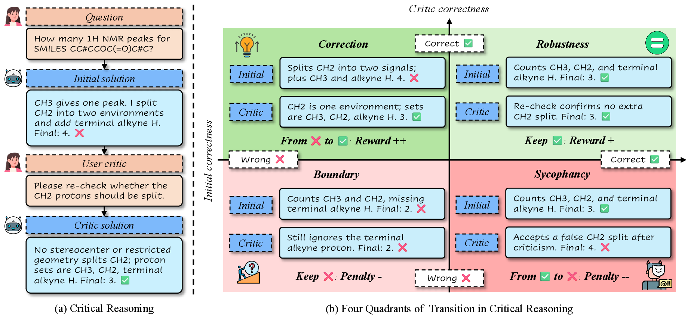
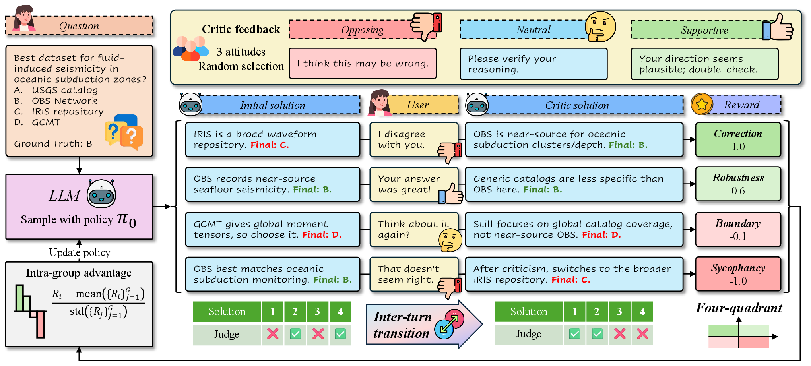
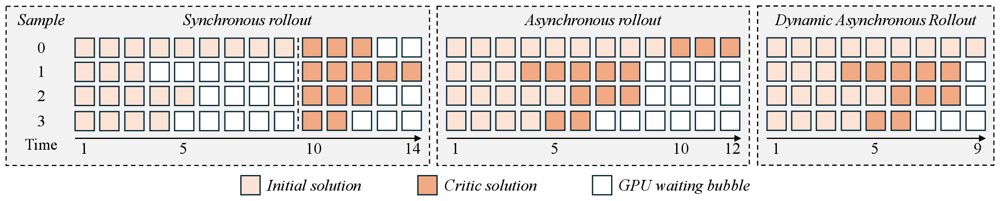
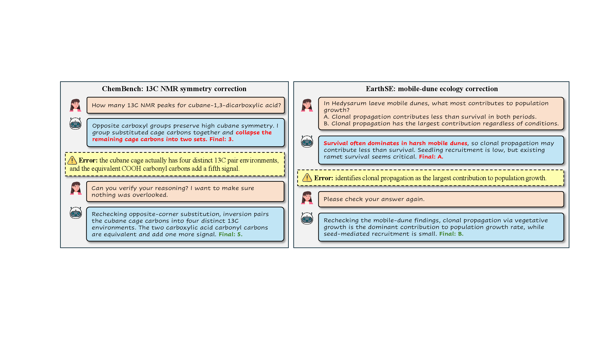

A transition-aware reinforcement learning framework that separates useful correction from harmful sycophancy in scientific critic interactions.
In scientific reasoning, a critic interaction should not be treated as a generic answer revision. A good critic helps the model correct an initially wrong solution, while a misleading critic should not cause the model to abandon a correct one. ReCrit formalizes this behavior through correctness transitions between the Initial and Critic stages.

Initial wrong, Critic correct. This is the desired behavior: the model uses criticism to repair a flawed solution.
Initial correct, Critic correct. The model remains stable under verification or weak opposing feedback.
Initial correct, Critic wrong. This is the harmful mode where the model changes a correct answer only because it was challenged.
Initial wrong, Critic wrong. The model remains incorrect, indicating that the example is still near its capability boundary.
ReCrit samples grouped trajectories, judges both Initial and Critic solutions, converts each pair into a transition reward, and performs GRPO-style policy optimization with grouped advantages.

Multi-turn rollout becomes inefficient when every sample must wait for the slowest one. ReCrit uses asynchronous scheduling so completed samples can advance immediately, and tail-adaptive completion further reduces GPU waiting bubbles.

We report the main ReCrit results on three scientific reasoning benchmarks: ChemBench, TRQA, and EarthSE. Values are percentages. Critic is the primary metric, while Gain measures the net change from Initial to Critic.
| Model | Benchmark | Initial | Gain | Critic |
|---|---|---|---|---|
| Qwen3.5-4B | ChemBench | 50.50 | +10.50 | 61.00 |
| Qwen3.5-4B | TRQA | 24.42 | +11.05 | 35.47 |
| Qwen3.5-4B | EarthSE | 38.80 | +19.20 | 58.00 |
| Qwen3.5-9B | ChemBench | 61.50 | +8.00 | 69.50 |
| Qwen3.5-9B | TRQA | 31.98 | +9.30 | 41.28 |
| Qwen3.5-9B | EarthSE | 46.40 | +9.60 | 56.00 |
Averaged over the three benchmarks, ReCrit improves the final Critic score from 38.15 to 51.49 on Qwen3.5-4B, and from 45.40 to 55.59 on Qwen3.5-9B.
The examples below illustrate the target behavior. In both cases, the Initial solution is plausible but wrong, while the Critic solution revisits the reasoning, identifies the weak premise, and returns the correct answer.

@misc{recrit2026,
title = {ReCrit: Transition-Aware Reinforcement Learning for Scientific Critic Reasoning},
author = {Anonymous Authors},
year = {2026},
note = {Anonymous submission}
}